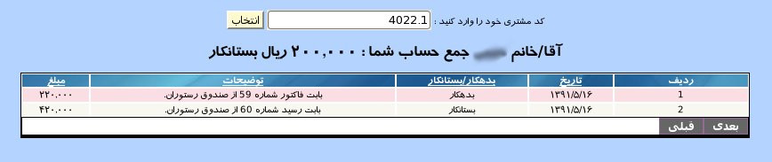

۱-مشاهده صورت حساب
پنل مشاهده ی صورت حساب به منظور دسترسی مستقیم میهمان به فاکتور ها و رسید های صادر شده طراحی گردیده است. برای مشاهده ی صورت حساب در کادر کد مشتری, شماره رزرو.شماره مشتری مانند 4022.1 را وارد نمایید و بر روی دکمه جستجو کلیک نمایید.

در گزارش نمایش داده شده تاریخ, شماره فاکتور یا رسید و مبلغ را مشاهده می نمایید.